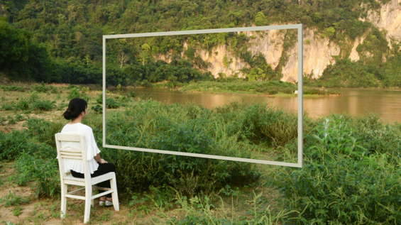

Saltar al índice
diapsalmata
Notes
Research
Projects

diapsalmata
↓
Índice
Notes / Research / Projects
01
Notes
Partial trace sampling
Flujos infinitos de telemetría
Métodos de evaluación con Bombadil
02
Research
Grados de Turing y subtopos
Hipercomputación relativa: MH y Kerr
Coalgebras y bisimulación
Deterministic simulation testing
03
Projects
OpenTelemetry en FoundationDB
Trazas para Bedrock
Catálogo de API
VM determinista y PRISM
Títulos de trabajo. Las entradas aún no están publicadas.